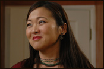
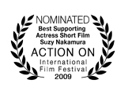

THE CAST
Suzy Nakamura
Born and raised in Chicago, Suzy began her career in the touring company of THE SECOND CITY theatre. After moving to Los Angeles, she began guest starring on television, landing recurring roles on THE WEST WING and CURB YOUR ENTHUSIASM. Her film credits include TIMECODE, AMERICAN ZOMBIE, RSO, and the award-winning independent films STRAWBERRY FIELDS (Venice Int'l Film Festival), TREASURE ISLAND (Sundance Special Jury Prize), and BARRIER DEVICE (Student Academy Award). In her spare time, she makes regular appearances in various improvisational and sketch comedy shows around the city.
Suzy Nakamura
"Kat"
Born and raised in Chicago, Suzy began her career in the touring company of THE SECOND CITY theatre. After moving to Los Angeles, she began guest starring on television, landing recurring roles on THE WEST WING and CURB YOUR ENTHUSIASM. Her film credits include TIMECODE, AMERICAN ZOMBIE, RSO, and the award-winning independent films STRAWBERRY FIELDS (Venice Int'l Film Festival), TREASURE ISLAND (Sundance Special Jury Prize), and BARRIER DEVICE (Student Academy Award). In her spare time, she makes regular appearances in various improvisational and sketch comedy shows around the city.
|  |